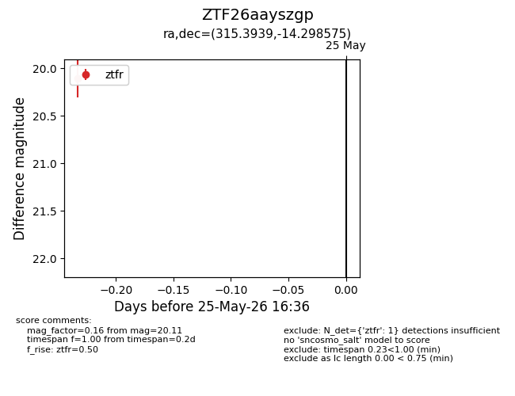
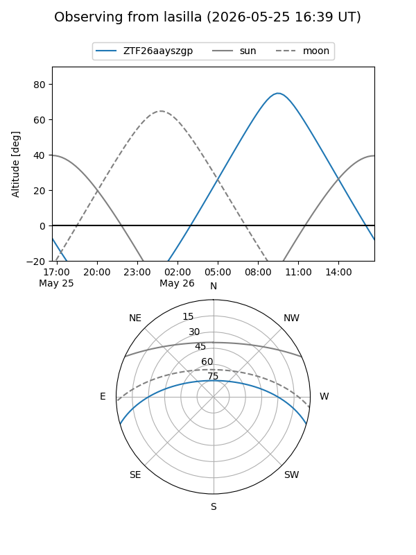
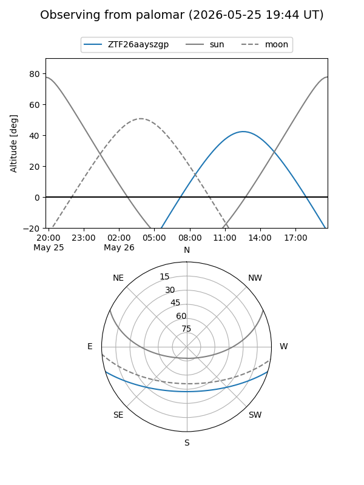

ZTF26aayszgp
Target ZTF26aayszgp at 2026-05-25 16:38
Aliases and brokers:
lsst-FINK: link
lsst-Lasair: link
lsst-ALeRCE: link
ztf-FINK: link
ztf-Lasair: link
ztf-ALeRCE: link
alt names
ZTF26aayszgp (ztf,fink_ztf)
Coordinates:
equatorial (ra, dec) = 315.3939,-14.29858
equatorial (HMS+DMS) = 21:01:34.55,-14:17:54.87
galactic (l, b) = (34.1822,-35.19989)
Flags:
Photometry:
last ztfr=20.11
1 ztfr detections
Lightcurve

Visibility


Additional plots